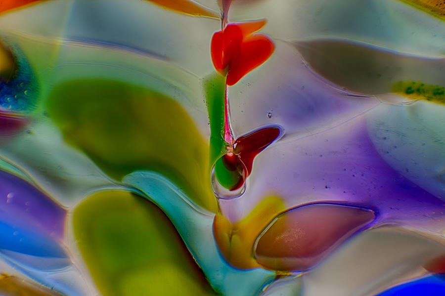

The Library · Omaste Witkowski
One Red Thread Through a Sea of Glowing Color
Heart on a Red Thread is a jewel-toned abstract in which a slender red line, topped with a small heart-like shape, cuts through glowing olive, violet, teal and gold.

Choose your size, paper, canvas, metal or frame. Printed, shipped and guaranteed by Fine Art America.
Look at the middle of the frame first. A thin red line rises just right of center and ends at the top in a small red shape that looks like a heart. Lower down, a second small red shape and a clear round droplet sit on the line.
Around it, smooth translucent shapes in olive and lime green, violet, teal, golden yellow and cobalt blue flow slowly from left to right. They glow as if light is passing through them. The red line gives your eye a place to land.
Choose Your PrintMade to order by Fine Art America · 30-day money-back guarantee
What Your Eye Finds, Piece by Piece
There is no backstory attached to this piece, and I won't invent one. What I can give you is what happens when you look at it for a minute.
Your eye goes to the red line first, because it is the one narrow, warm thing in a frame of broad, soft color. It travels up to the heart-like tip, then down to the droplet, and then the waves carry it out to the left and right.
Then you notice the details. Thin pale rims outline each shape. A few tiny bubble-like specks are scattered across the surface. The colors deepen where the shapes overlap.
Some people see a tiny plant. Others see a pendant on a thread, or just color and shape. The piece works whichever way you read it.
What You'll See Up Close
- A slender red vertical line with a small heart-like top: it gives the whole image a focal point, which many colorful abstracts lack.
- A clear, round droplet that looks wet: it adds a glossy, liquid touch near the center.
- Olive, violet and teal masses with golden yellow, cobalt blue and magenta: a jewel-toned palette that keeps the red accent grounded.
- Light that seems to pass through the shapes, with pale highlights along the edges: the glow of stained glass, deepest where the colors overlap.
- Slow, wave-like curves flowing left to right in a tight crop: a sense of calm movement, with shapes that continue past the frame.
Where It Belongs
This is a horizontal piece, so it suits wide spaces: above a sofa, a bed, a console or a desk. The dark olive and violet masses ground the bright red, so it holds its own in a quiet room and in a colorful one.
The mood is playful and vivid, with a calm flow underneath. The small heart-like form adds a bit of warmth and whimsy, and the main appeal is simply how it looks.
- This is for you if you want a jewel-toned color moment on a wall, not a muted accent.
- This is for you if you like abstracts that still have one clear place for the eye to land.
- This is for you if a single warm red line against olive, violet and teal appeals to you.
- This is for you if you enjoy glossy, glass-like surfaces and glowing color.
Choose Your Print on Fine Art America
- Your choice of size, paper, canvas, metal or frame, picked on the listing page.
- Made to order by Fine Art America, then shipped from their facility, typically within a few business days.
- A 30-day money-back guarantee from Fine Art America.
- The exact title and image you see here: Heart on a Red Thread, Jewel-Toned Abstract, by Omaste Witkowski.
- One click to the listing, where you can see every available option and price.
Choose Your PrintMade to order by Fine Art America · 30-day money-back guarantee
Questions before you choose
Will it hold up at a larger size?
The listing shows the sizes available for this image. Check it for the largest option before you order, since I won't promise a size the listing doesn't offer.
What is it made from, a photograph or glass?
It looks like a close-up of translucent, glass-like shapes, and that is how I describe it here. This page sticks to what you can see in the image, so I'm not stating a process.
What if it doesn't look right in my room?
Fine Art America offers a 30-day money-back guarantee, so you can order and see it on your own wall.
Picture the red line rising through the middle of a wall above your sofa or desk, with the olive, violet and teal glowing around it. The room gets a jewel-toned focal point, and the small heart-like shape gives it a little warmth.
When you're ready, go to the Fine Art America listing and choose your print.
Choose Your PrintMade to order by Fine Art America · 30-day money-back guarantee
Find your own piece with the art adventure · Ask the gallery what fits your wall